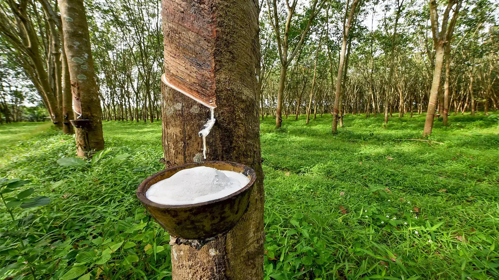
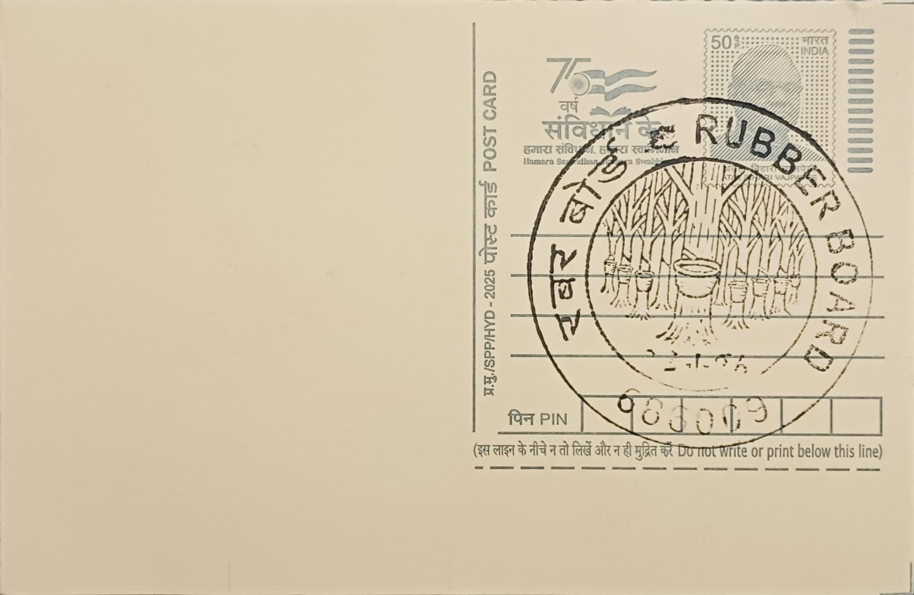
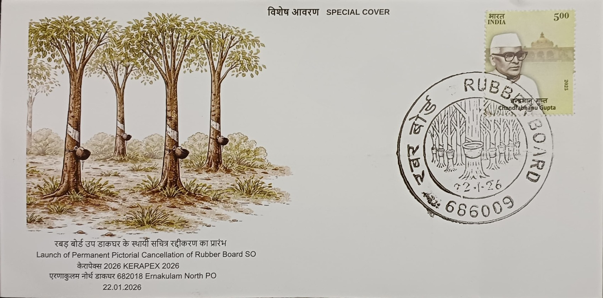
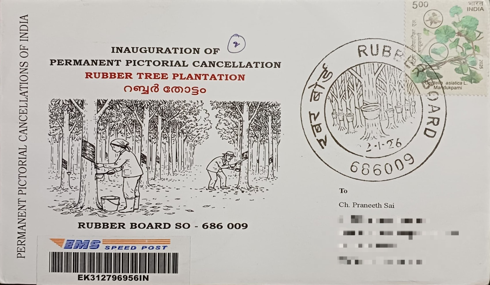
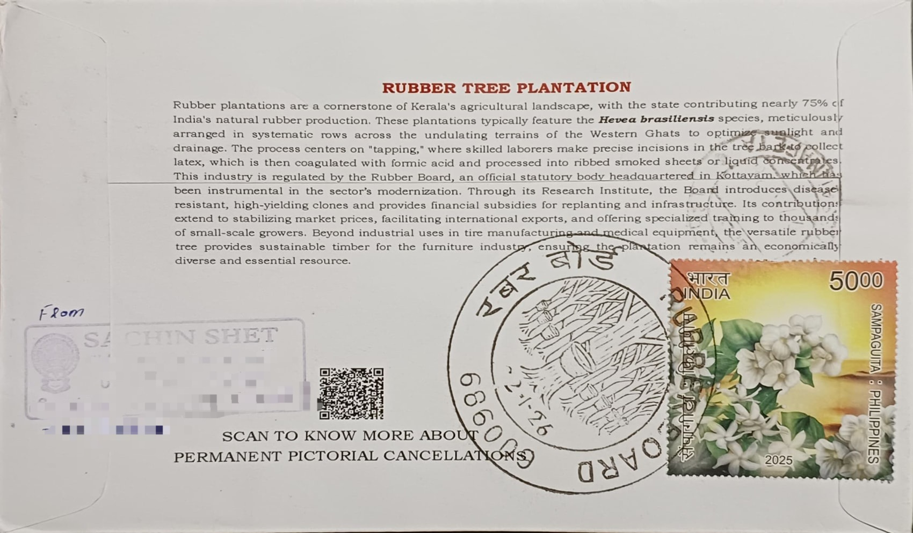

The Kottayam region of Kerala, often referred to as the "Land of Letters, Latex, and Lakes," serves as the epicentre of India’s natural rubber production. The undulating topography and the tropical humid climate of the district, characterized by well-distributed rainfall and temperatures ranging between 20°C and 35°C, provide the ideal environment for the Hevea brasiliensis tree to flourish. Historically, the expansion of rubber in this belt transformed the agrarian landscape of Central Travancore, replacing traditional crops with expansive plantations. Today, Kottayam alone accounts for a significant portion of the country's total rubber output, making it the most critical node in the domestic supply chain for natural latex.
The institutional backbone of this sector is the Rubber Board of India, which is headquartered in Kottayam. Established under the Rubber Act of 1947, the Board was created by the Government of India to provide a statutory framework for the systematic development of the industry. The primary goals behind its establishment were to regulate the production and marketing of rubber, provide technical and financial assistance to growers, and conduct advanced research to improve crop yields. By centralizing operations in Kottayam, the Board ensured that the latest scientific advancements in clones and tapping techniques were directly accessible to the smallholders who dominate the Kerala rubber landscape.
Livelihoods in the Kottayam region are intrinsically tied to the lifecycle of the rubber tree. Unlike large corporate estates found in other parts of the world, Kerala's rubber economy is built on the backs of over a million small and marginal farmers. The daily routine of "tapping"—the precise process of incising the bark to collect the milky latex—provides consistent employment for a vast workforce of skilled tappers. Beyond the farm gate, the dependency extends to local cooperatives, smokehouse operators who process the latex into ribbed smoked sheets (RSS), and scrap rubber traders. This micro-economy sustains the high standard of living and literacy for which the region is known, acting as a financial safety net for rural households.
The rubber industry in Kottayam is a sophisticated network that bridges raw agriculture with high-end manufacturing. The district is home to numerous processing units, centrifuge plants, and rubber-based industries ranging from footwear and automotive components to surgical gloves and adhesives. The significance of this industry transcends regional boundaries; natural rubber is a strategic industrial raw material essential for the global tire industry. In Kottayam, the presence of the Rubber Research Institute of India (RRII) ensures that the industry remains competitive through the development of high-yielding, disease-resistant varieties, maintaining India’s position as one of the world’s most productive rubber-growing nations per unit area.
Strategically, the rubber plantations of Kottayam contribute significantly to the carbon sequestration efforts of the state, acting as a massive "green lung" for the region. The economic importance is underscored by the fact that the domestic price of rubber often dictates the local market’s purchasing power. When rubber prices fluctuate, the entire socio-economic fabric of Kottayam feels the impact, influencing everything from real estate to retail. As the world shifts toward sustainable and bio-based materials, the natural latex from these trees remains irreplaceable, ensuring that Kottayam’s historical legacy as the rubber capital of India remains vital for the nation's future industrial and economic security.

Official Inaugural Cover by India Post

Travelled Private Cover Front

Travelled Private Cover Back
| Date of Introduction | January 22, 2026 |
|---|---|
| Address | Sub Postmaster, |
| Rubber Board SO, | |
| Kottayam (dt.), Kerala - 686009. |